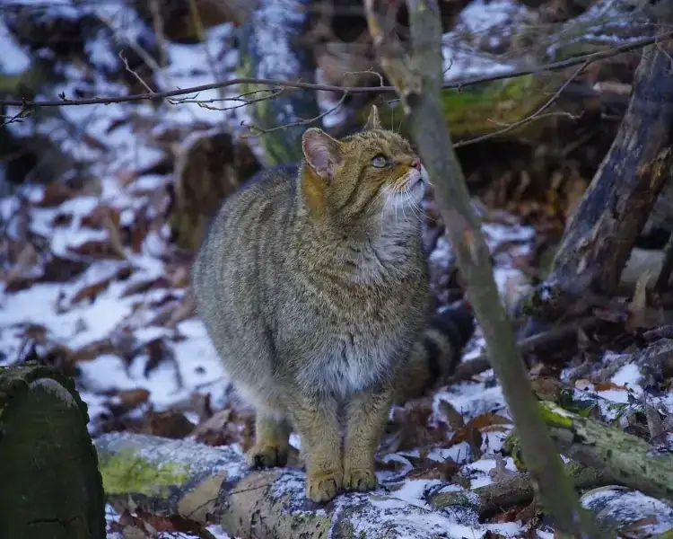

Дивља мачка

Дивља мачка (Felis silvestris).
□ Таксономија
| Царство: | Animalia |
| Тип: | Chordata |
| Класа: | Mammalia — Сисари |
| Ред: | Carnivora — Звери |
| Породица: | Felidae — Мачке |
| Род: | Felis Linnaeus, 1758 |
| Врста: | Felis silvestris Schreber, 1777 |
| Подврста: | F. s. silvestris — европска дивља мачка |
| Статус: | IUCN (глобално) LC — најмања забринутост · строго заштићена врста |
| Станиште: | Затворене листопадне шуме, нарочито храстово-букове зоне Рајца |
| Маса / дужина: | 3–9 kg · 50–75 cm тело + 28–37 cm реп |
🔍 Морфологија — разлике вс. домаћа мачка
Дивља мачка (Felis silvestris silvestris) спољашношћу подсећа на крупну, масивну домаћу мачку тиграсте шаре — таббе. Тело је ипак знатно масивније и снажније: мужјаци могу тежити 7–9 kg, а грађа мускулатуре вишеструко је снажнија. Глава је широка и округла; образна кост изражена; мускулатура вилице снажнија него код домаће мачке — адаптација за убијање плена ударом по потиљку.
Длака је густа, устаљена, сиво-смеђа са тамним пругама по леђима и боковима — никада без „дивљих" узорака. Реп је кључан за идентификацију: тупи, буђаваст, прстенасто шарен са одсечним, потпуно черним завршетком — домаће мачке тигровог узорка имају шиљасти реп са поступним прелазом. Трбух је жутасто-беличаст са понекад видљивим тамним тачкама.
🌿 Станиште на Рајцу
Дивља мачка је строго шумска врста — захтева затворене, зреле листопадне или мешовите шуме са богатом структуром приземља, падовином и шупљим стаблима. Избегава отворене и урбанизоване терене. На Рајцу је присутна у најгушћим деловима шуме, нарочито у храстово-буковим зонама са добро развијеним подраслом.
Индивидуални ревион мужјака 2–12 km², женке 1–4 km². Дивља мачка је строго солитарна — осим у периоду парења и подизања младих нема толеранцију других јединки у ревиону. Ревион маркира урином и чешким жлездама на видљивим тачкама стаба.
🔬 Биологија и понашање
Дивља мачка је готово искључиво ноћна животиња — активност почиње у потпуном мраку, са врхунцем у прво доба ноћи и пред зору. Дању мирује у шупљинама дрвета, буквишту, испод камених плоча или у густом шикарју. Изузетно је опрезна и скривалачка — директно посматрање скоро немогуће без фото-замке или термалне оптике.
Лов је на земљи и у крошњи — прогоњење плена у краткој, експлозивној пратњи или заседа из дебљине. Сви чулни системи изразито развијени: вид у мраку до 6× бољи него људски, слух у опсегу 60 kHz (мишеви и птице), осетљиви вибриси (бркови) за детекцију кретања. Гласање ретко — само у рију и при директном конфликту.
🍃 Исхрана
Дивља мачка је стриктни месоједер — основни плен чине ситни глодари (шумски мишеви Apodemus, волухарице Myodes, пољска мишевина) који чине 70–90% годишње дијете. Додатни плен: зечеви (нарочито млади), птице до величине шумске кокоши, гуштери, жабе. Веома ретко напада срнчад.
Дивља мачка не конзумира стрвину и нема широку дијету попут лисице — строги је карнивор и ефикасан ловац прилагођен искључиво живом плену. Потражња: 250–300 g меса дневно. При високои Бројности мишева, јединка може убити знатно више него шта конзумира — кеширање је забележено али ретко.
🌸 Размножавање
Риј (парење) одвија се у фебруару–марту. Гравидитет 63–68 дана. Котљење у априлу–мају, у шупљини дрвета, под корењем или у напуштеној јазбини. Легло 1–8 младих, просечно 2–4. Младунци се рађају слепи и беспомоћни. Мајка их одгаја самостално — мужјак не учествује у подизању.
Младунци отварају очи са 10–14 дана. Излазе из скровишта са 4–5 недеља. Самостални лов са 3–4 месеца. Потпуно самостални до јесени, когда напуштају мајчин ревион. Полна зрелост са 9–12 месеци. Животни век до 15 година у заробљеништву, 5–8 у природи.
⚠️ Хибридизација са домаћом мачком
Највећа еколошка претња дивљој мачки у Европи — укључујући Рајац — јесте хибридизација са домаћом мачком (Felis catus). Домаће мачке луталице продиру у шуму, пре свега у периферним зонама ПИО, и паре се са дивљим јединкама. Хибридни потомци морфолошки су скоро неразлучиви од правих дивљих мачака — само генетска анализа може потврдити порекло.
Проблем је озбиљан: у неким деловима Европе „чистих" дивљих мачака готово и нема — у потпуности су замењене хибридима. У Србији, истраживања из 2010-их указују на присуство хибридизације, али и на опстанак значајних генетски чистих популација у крупним шумским масивима.
🛡 Заштита и статус
У Србији је дивља мачка строго заштићена врста — убијање, хватање, узнемиравање, уништавање станишта и поседовање забрањени под пуном законском одговорношћу. Конвенцијом о биолошкој разноврсности (CBD) и Бернском конвенцијом (Анекс II) класификована је као врста која захтева посебне мере заштите.
IUCN глобални статус је LC — најмања забринутост, али локалне популације могу бити осетљиве због фрагментације станишта, хибридизације са домаћим мачкама и директног прогона. На Рајцу је присутна у малом броју — процене говоре о свега неколико десетина јединки на целом подручју. Свака јединка представља критично важан елемент генофонда.
🗓 Календар активности на Рајцу
Дивља мачка је тешко уочљива — фото-замка је готово једини реалан начин документовања присуства:
🐾 Трагови и знаци присуства
Трагови дивље мачке подсећају на домаћу мачку, али крупнији — кључна разлика је увлачење ноктива:
| Дужина отиска | 3.5–4.5 cm — крупнији него код домаће мачке |
| Ширина отиска | 3.5–4.5 cm — округао, скоро кружан |
| Ноктиви | Никада видљиви — увлаче се; главна разлика вс. пас/лисица |
| Број прстију | 4 видљива јастучића + 1 главни |
| Ходни образац | Директна регистрација у касу — елегантна, пречна линија |
| Дужина корака | 25–40 cm у умереном ходу |
💩 Измет
Цевасти, 5–8 cm, сличан домаћој мачки али нешто крупнији. Карактеристика: дивља мачка УВЕК закопава измет у земљу — никада га не оставља на видљивом месту за разлику од лисице и куне. Ако у шуми нађете мачку-ски измет незакопан — домаћа мачка луталица.
🌿 Стаза кретања
Прецизна, уска, директна стаза — дивља мачка хода са великом прецизношћу и задња шапа пада тачно у отисак предње. У снегу стаза изгледа готово као рад једне јединке, иде дуж шумских стаза и падовина.
🌲 Огреботине на стаблима
Вертикалне огреботине ноктива на кори дрвета до висине 100–120 cm — чешће него код домаће мачке. Служе за одржавање ноктива и маркирање ревиона. Обично на стаблима пречника 10–25 cm, поновљене на истим тачкама.
🦴 Остаци плена
Мишеви и волухарице: глава и реп обично нетакнути; тело конзумирано чисто, без ломљења костију. За разлику од куне: мачка ретко носи плен далеко — конзумира га близу места убојства или га склања у оближње скровиште.
📷 Фото-замке — водич за документовање
Снимак дивље мачке са фото-замке драгоцен је научни налаз — пријавити управи ПИО и приложити фотографију за мониторинг популације.
Где поставити
Унутрашњост густе шуме, далеко од насеља и домаћих животиња. Шумске стазе са меким тлом и видљивим трагима мачке. Падовине са буком — омиљени микростанит.
Висина и угао
25–40 cm — висина тела дивље мачке. Угао 20–30° надоле дуж стазе. Не постављати уз локалитет са псима — поузданост мрежа сигнала значајно опада.
Кад очекивати снимак
22–04 ч — строго ноћна врста. Феб–март: шира активност у рију. При великом снегу: повећано ноћно кретање у потрази за храном.